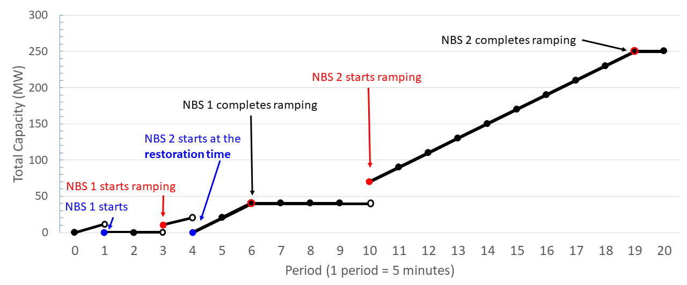

Parallel Power System Restoration is an essential activity for grid resilience, where grid operators restart generators, restore loads after a blackout event. The core decisions in restoration planning are to partition the grid into a few sub-networks, each of which has an initial power source, and then restart the generators and pick up the loads in each network (called generator startup sequencing problem or GSS) in a parallel fashion, aiming to restore electric service in shortest time. Due to the significant complexity of each problem, the sectionalization and GSS problems are usually solved separately.
An enormous impact of an extended power system blackout highlights the need for a more resilient grid that can recover rapidly from disruptions due to extreme weather events or malicious attacks (Adibi and Fink 2006) Power system restoration is to restore electricity service after a partial or complete blackout. During restoration, operators will use initial power sources (called black-start gen-cularerators) to start non-black-start generators, energize transmission paths, and pick up loads. Partitioning the system into subsystems can better utilize the black start resources and achieve a faster restoration.
Power system is a network with nodes representing the buses and edges representing the trans-mission lines connecting the buses. In a sectionalizing plan, the initial sources are the black start (BS) generators, which can be started on their own without power from the grid. Power from a BS generator is then used to provide cranking power to provide power to generators without BS capability. The PPSR problem starts all the NBS generators simultaneously across the entire system. The problem may relax the connectivity of certain nodes in an island, but some nodes may not be connected to BS nodes.
The GSS problem aims to crank all NBS generators and supply all critical loads while keeping total capacity of the system non-negative over all time periods. Figure 1 illustrates the capacity curve pi(t) of an NBS generator i with 10 MW of cranking power, two periods of crank time (blue), three periods of ramping time (red), and a full capacity of 60 MW. The capacity curve is thus a non-decreasing function on the time interval beginning from the start time.
The generator startup sequencing (GSS) problem is NP-hard. Consider a system with one BS generator and two NBS generators. The maximum total capacity curve of the power system will reach to 250 MW. The reduction shows that the feasibility of the generators startup sequencing problem is at least NP-complete: Theorem 1. The problem is a reduction of the partition problem, and is thusNP-hard. The solution to the problem is that the generator startup sequence problem is N-Himalimalimal.
They use Equations 1-4 to solve the GSS problem on each island or a power system with a single BS generator. Equation 2 ensures that NBS generator i starts once during the time horizon T, and Equation 3 ensures that the total capacity of the system is non-negative. They develop an integer linear pro-gramming formulation, Equations 5-17 below, of the parallel power system restoration (PPSR) problem. Empirically, this formulation is solved very quickly.
Equation 6 stipulates that a BS node j belongs to the island j, and Equation 7 stipulates every non-root node v belongs to exactly one island. They can extend the generator startup sequencing formulation to the PPSR problem in which sj.i(t) = 1-t, which indicates that generator i in island j starts at period t. They denote the set of oriented arcs (lines) as L. For each (u,v) ∈ L and (J), they define the binary variable yj(u) =. 1 if line (j) belongs to island j and 0 otherwise. The objective function is to minimize the
Given a maximum time horizon T, the solution to the PPSR problem on a power network G is expressed as (xOPT, RTOPT) = PPSr(G,T) The solution is expressed in a post-process for the optimal schedule on each island. Critical loads, such as nuclear station power and critical infrastructure infrastructures, must be served within required time limits. They add such constraints to IEEE-30 bus system in Section 5.1.1.
A lower bound TLOW is obtained by solving a simplified version of the GSS problem. The infeasibility of PPSR(G,T) can be detected quickly when the time horizon T is shorter than the optimal restoration time RTOPT. They show that the optimal solution to the problem with a single central central BS node is a lower bound for the original problem. The optimal value of the problem on the entire power system with the single central BS generator. They use other integer linear programming.formulations on subsystems which can be solved very quickly.
The bottom-up approach is a feasible schedule for the GSS problem on an entire power system with a single central BS generator. The empirical results show that the lower bound is fairly tight. They use the initial lower bound to set an initial not-too-long time horizon (upper bounding) for the (upper) bounding approach. They start with a lower bound of the optimal restoration time and increase T by one unit each time they detect infeasibility. Then solve PPSR(G,T), increasing the time horizon T one unit at a time until the solution (xOPT) is optimal.
PPSRT(RST0) can be solved very quickly on the smallest number of (tree) edges for connectivity. The tree-partition provides a sectionalizing plan x0 of the entire system. Use local search to obtain the tighter upper bound solution xLS. Merge two islands of the longest and shortest restoration times into one island of two BS nodes, and sectionalize the merged island into two islands at the minimum restoration time. Construct a subgraph G′ to solve PPSR(G′,RTLS) where RTLS is the restoration time of the plan.
A feasible sectionalizing plan and its restoration time (xLS,RTLS) = LS(x0,RT0) to PPSR(G) The local search method (LS) provides a potentially better solution, expressed by the following: The heuristic finalizes the heuristic. Chopra, Qiu, and Shim: Parallel Power System Restoration (PPSR) The algorithm is based on the best known plan and the restoration time of a feasible plan x0.
The integer programming approach introduced in Sections 2 and 3 delivers an optimal solution. However, the formulation can only handle small to medium size problems. The bounding approach in Section 3 can solve larger systems with a quantifiable solution. In rare events where a large system of thousands of buses goes blackout, they need a fast algorithm that can provide a good solution in a short amount of time. A good restoration plan will need to be quickly constructed from scratch when the situation of the blackout is different from the assumptions on the assumptions that the plan constructed in advance was based.
They apply the randomized rounding procedure to a certain probability distribution which is a sub-optimal solution to the LP-relaxation. The initial fractional solution is usually a uniform distribution, which they call the centroid, with the same components in order to start with an unbiased probability distribution. In Section 5.2, they will perform computational experiments comparing the fthe randomized round-forming procedures. The computational experiments will verify that ARR-CR performs as good as FRR-LP.
Algorithm 2 Rounding Algorithm observes xINT (˜x) near the relaxed value distribution ˜x. The rounding algorithm always produces the same outcome as a sectionalizing plan xINT. They evaluate the restoration time RTj of each island Vj by solving the GSS problem on the island. The integer linear programming formulation in Equations 1-4 solves GSS problems within a reasonable time. Then the entire entire restoration time is RT = RT (xINT) = maxj∈J RTj at bottleneck island BNI = BNI (xint)
Chopra, Qiu, and Shim: Parallel Power System Restoration. The usual randomized rounding method first solves the LP relaxation of the integer linear pro-gramming formulation of the PPSR problem, given in Equations 5-17, along with (x,y,s) ≥ 0 (where 0 is the zero-vector), relaxing the integrality constraint of the variables. With a randomized rounding procedure, a randomized round procedure may observe multiple trials 0 ≤ r ≤ N of sectionalizing plans xINT(r) = xINT; 0 ≤ N ≤ N or RT = ∞ at island BNI.
The adaptive randomized rounding method (ARR) is similar to FRR except that it changes the distribution of the centroid. The smoothing constant α(r) determines the speed of the process. The algorithm uses an initial distribution¨x = (¨x(i,j) = 1/2 for i. and j; ¨x is a uniform distribution. ARR uses accelerator (Acc) to speed up as ˜x converges to an integer solution x∗.
The power systems tested in this paper represent the most computationally challenging restoration planning scenarios. The test systems represent power systems at various scales. The Pittsburgh Supercomputer performed parallel computing with multiple threads. They use the integer programming approach and computational approach introduced in Section 4.0. The computational time in this section are all the CPU time plus the administration time (e.g., time to feed input data) They solve power systems IEEE-30, IEEE-118, IEEE-300 and SC-500. They slightly modify the sectionalizing formulations in Equations 5-7 and 13-17.
Chopra, Qiu, and Shim: Parallel Power System Restoration (20) April 6, 2022. Algorithm 4 Adaptive Randomized Rounding Rounding algorithm. Initial distribution ˜x(0) = ¨x; array of BS nodes array(J) Time horizon T; time horizon T: while elapsed time does not exceed time limit TL (e.g., TL = 10 min. or 25 min.) do. If x∗ = ∅ then if RT ∗ > RT (r) then the best known sectionalizing plan would be returned.
The test used a modified IEEE-30 bus system. The IEEE-118 bus system consists of 118 buses, 186 branches and 54 generators. They created the non-black-start generator and the critical load parameter ranges in proportion to the real demand at the buses. They performed the bounding approach introduced in Section 3.1.2.1. The approach first solved GSS-Aggregate(T =60) obtaining a bound TLOWOWT. Subsequently, the lower bounded approach solved PPSR(PPSR) and PPST(GT = 19)
The approach solves PPSR(G) to the exact optimality in 527 seconds. Qiu and Li (2017) took 5 hours 36 minutes to solve the same problem. They tested its performance on large scale power systems IEEE-300 and SC-500 from Xavier and Qiu (2020) The largest (smallest resp.) IEEE-118 generator node was placed at the generator node of the largest (Smallest resp." parameter on the large power-systems. They scaled up the critical loads of the generators to the loads, proportional to their maximum loads over a certain time interval. The nodes with the highest degrees were chosen to be the BS nodes.
The results for both problems are provided in Figure 5. On IEEE-300, the lower bounding approach gave a lower bound of 11 periods very quickly. On SC-500, the upper bound of 14 periods was obtained by solving GSS-Aggregate very quickly. On a random spanning tree, the initial upper bound obtained was 21.741 seconds. They achieved the near optimal solution xLS within a total of 303 seconds (= 6 + 257 + 40). They then attempted an even larger problem, PEG-1354. In this case, solving PPSR(RST0) on RST0 took 54,319 seconds.
In Section 5.1, the medium-scale instances IEEE-30 and IEEE-118 were solved to the exact opti-centricmality within 10 minutes of computational time. On the large scale power systems, IEEE-300 was also solved to exact optimality in 30 minutes. They perform computational experiments comparing fthe randomized rounding procedures. The adaptive randomized rounding procedure on the centroid (ARR-CR) performs as good as the traditional ran-centricized rounding procedure (FRR-LP) The relaxation time takes longer than the 25 minute computational response deadline.
ARR-CR is twice better than FRR-LP in the number of optimal runs on IEEE-1354, IEEE-1888 and PEG-1951. ARRs are not significantly.better than FRRs. As the size of the power system grows, number of trials decreases (Table 2), and ARRs. The number of runs hit the best known restoration time of 24 periods within 25 minutes (Figure 7) A majority of the runs hit a target of 24 hours (Figure 6)
The results developed in this work could help system operators make better restoration plans. The random-rounding algorithms exhibited strong scalability in solving ultra-large scale optimization problems in a very short amount of time. This technique could be extremely useful when solving challenging problems with highly limited time, such as in emergency response, humanitarian relief, etc. In future, they will explore the applicability of this algorithm to other computationally challenging problems where exact algorithms are not able to solve with limited time or computing power.